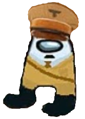

Amogus je bytost žijící na místě zvaném Amgo.
Žije jedině tam kde je sus.
Amogus je sus .
Tato informace je sus.
To co právě čtete je sus.
Krátká historie
Medjed
Prvním důkazem existence sus druhu (Suskind) je vyzobrazení Medjeda. V levo je vidět zobrazení Medjeda "Otec všech Amogů". Letopočty se počítají od tohoto zobrazení, tudíž momentálně ležíme v letopočtu 0 BM (before Medjed).
Adolfus Susler
Rovnou v historii přeskočíme na nejvýznamějšího Amoguse, a tím je Adolfus Susler. Byl to velmi sus diktátor. V historii vývoje Amogusů sehrál velkou roli v bodobě sus překážky. Figuroval ve válce "The Great Sus War", tu nakonec bohužel prohrál. Z toho je jasný jeho způsob doruzomívání, jeho oponenti začínali dýcháním plynu a končili na hromádcej. Jeho zbraní byl plyn, který s jeho kamarádem Sussolini vytvořili ve svém brzkém mládí. Ačkoliv se inspirovali bohem Zafoduse a jeho nákazou [Sussed], bohužel se jim to nepodařilo stvořit.
Vynálezy
Soustava Giga*igaBalls
Je to soustava která počítá po třech, vždy "Giga" pak "*iga" a nakonec "Balls". Je složitá a jedině vybraní Amogusové jí rozumí. Je to velmi sus.
Sussy Measurer
Jde o přístroj schopný měřit hodnotu susáctví, pozor ale na objekty vyzařující tak vysoké hodnoty sus , jinak by se přístroj nezvratně rozbil a nabil by té největší sus hodnoty co existuje, překonal by i Amosuse, což je Susman, který je tak moc sus, že se vysusoval ze sussiversu.
Fakta o bytosti Amogus
Protože nemají ruce a s nožičkama moc nezmůžou, tak mají dost velký problém se stavbou velkolepého susimpéria.
Mají ale štěstí, protože jim pomáhá nejlepší stavařská dvojice Pat a Mat.
Některým mohlo už určitě dojít že Amogusové nemají ani pusu, jenom sus oko. Tak jakým to způsobem dokážou neustále "susovat"?. Funguje to tak, ačkoliv to tak nevypadá, že doopravdy Amogus nevydává žádný zvuk, za to ale přenáší tepetaticky tyto myšlenky podezdření do svých obětí. Proto si myslíme že nás susuje, protože nás právě manipuluje.
Tuto schopnost se naučili od Hnilmoga a jeho manželku, která je jeho sestra jménem Amoňila
Hnilmog a Amoňila
Hnilmog
Hnilmog je polobůh, syn boha Zafoduse a amogiňi Amoňili, která je zároveň jeho manželka. Hnilmog má schopnost naučit Amogase schopnost susování, postrádá každopádně schopnost stvoření nákazy [SUSSED] po svém otci. Tu má jedině Zafodus.
Amoňila
Amoňila je dcera Gipsy Chipsy Kinga, starosty susměsta. Vše co řekne platí a má velkou autoritu, mezi dalšími Amogusy. Gipsy Chipsy King je velký a objemný, a jeho nejoblíbenější sváčou jsou suschipsy.